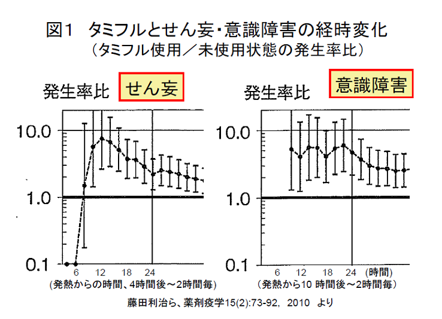
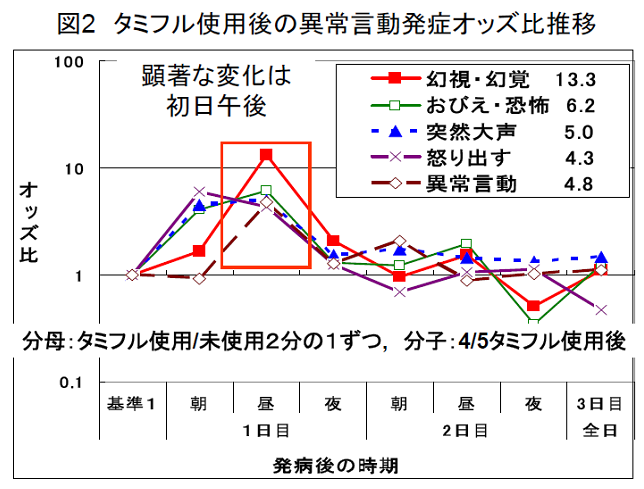
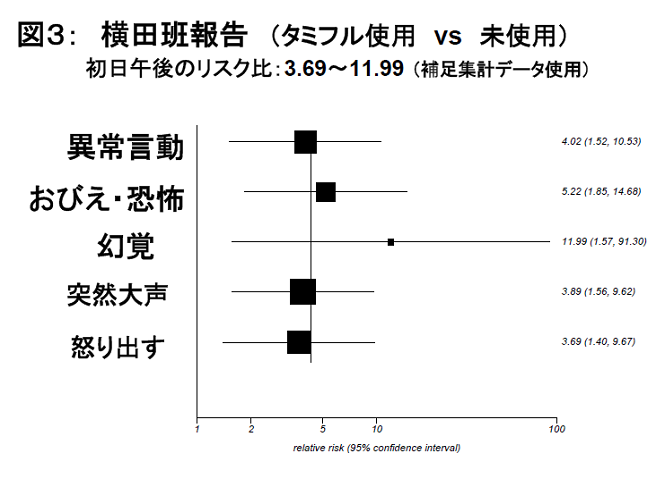

藤田利治氏（統計数理研究所教授）らのグループが発表した薬剤疫学的研究によれば、インフルエンザにかかり、オセルタミビル（タミフル）を服用した場合、服用しない状態に比べて、せん妄が約1.5倍、意識障害は1.8倍多くなっていました。この結果は、日本薬剤疫学会が発行する医学雑誌「薬剤疫学」の最新号に掲載されたものです（薬剤疫学15(2)：73-92, 2010）
同論文の要旨（英文）を日本語に翻訳して、NPO法人医薬ビジランスセンター(薬のチェック)の解説を付けて紹介します（英文要旨の当センターによる翻訳）。
なお、筆頭著者の藤田利治氏は、この研究が学会編集委員会に受理された後、2月15日に逝去され、この研究論文は遺稿となりました。謹んで、ご冥福をお祈り申し上げます。
この論文の特徴は、
第１に、インフルエンザにかかり、オセルタミビル（タミフル）を服用した場合、服用しない状態に比べて、せん妄が約1.5倍多く（ハザード比1.51）、意識障害は1.8倍多くなっていた（ハザード比1.79）ということが、探索的研究ではなく、仮説強化を目的とした疫学調査結果で認められたことである。
第２に、せん妄は、発熱後8時間から16時間後頃まで、タミフル服用で5〜7倍有意に生じやすくなっていたことが記載されている。また、意識障害は発熱後10時間から24時間後頃まで、タミフル服用で4〜6倍有意に生じやすくなっていた(図1)。
第３に、これらの結果は、横田班（横田俊平、藤田利治ら）による最初の疫学調査の結果（初日の午後に異常行動が数倍高まる：図2，図3)とよく一致している。
|  |  |
第４に、タミフルに対する当局の規制が「10歳以上の未成年」とされている点について、「10歳未満で事故につながりかねない異常行動の発生率が高い可能性があることは留意する必要がある。」と述べている点も重要である（久保田潔日本薬剤疫学理事長による藤田氏への追悼文を兼ねたこの論文の論評のなかでもその重要性が指摘されている）。
ただ、「10歳未満で事故につながりかねない異常行動の発生率」の高さは、タミフル使用時の未使用状態に対するハザード比ではないため、不明確である。しかし、せん妄は、6〜11歳で最も発症率が高く（1000人日あたり9〜11歳が4.6人、6〜8歳が4.0人）、意識障害は、０〜11歳まではほとんど変わらなかった（３〜５歳で最も高く同3.02人だが、他は2.07〜2.83人）。
先に述べたように、タミフル未使用状態に対するタミフル使用状態でのハザード比が、発熱から10〜16時間以内で非常に高かったことを考慮すれば、これらの年令では、タミフルの影響をより強く受けるのではないかと推察される。
タミフル使用によるせん妄や意識障害の、年齢別のハザード比をぜひとも知りたいものである。
第５に、「参考として実施した解析」との断りつきではあるが、ケース・コホートの手法による解析結果では、タミフルのハザード比は、2.88（p<0.0001）、アセトアミノフェンとの調整をしたうえでも2.80（p<0.0001）とやはり有意であった（アセトアミノフェンとの関連は有意でなかった）。
第６に、異常行動の延長線上にある「せん妄」だけでなく、「意識障害」との関連も認められた点が重要である。なぜならば、意識障害は、せん妄よりも低年齢で生じやすく、突然死につながりうる症状だからである。
最後に特筆すべきは、これらの研究は、厚生労働省の研究として廣田班により2009年6月16日に最終報告がなされた調査データと同じデータで解析された（もともと藤田らにより計画されデータが収集されたが、「利益相反問題」のため、廣田班で解析報告されたもの）点である。廣田班の解析方法がいかに誤ったものであったかを如実に示している。
したがって、厚生労働省は、今回公表された結果に基づき、また、動物実験の結果も含めて、これまでの症例につき、再検討しなければならない。
インフルエンザに合併症する意識障害、異常行動、せん妄、幻覚、けいれんなどの精神神経症状の発生メカニズムは完全には解明されていない。インフルエンザ治療中の薬剤使用と精神神経症状との関連についての理解も乏しい。本研究は、インフルエンザ罹患後の精神神経症状と使用薬剤との関連について焦点を絞って検討した最初の薬剤疫学的研究である。
コホート研究
研究対象は2006/2007年シーズンにインフルエンザに罹患した18歳未満の患者である。医師用査票と患者家族用調査票を用いて、2007年1月から3月の間に調査を実施した。回収された9,389例を用いて、精神神経症状（せん妄、意識障害、熱性けいれん）と、使用薬剤（アセトアミノフェンおよびオセルタミビル）との関連について解析した。
せん妄について、薬剤の未使用状態に対する使用状態のハザード比（リスク因子で調整した比例ハザードモデルによる多変量解析結果）は、アセトアミノフェンが1.55（p=0.061）、オセルタミビルは1.51（p=0.084）であった。これらの結果は有意ではなかったが、いずれの薬剤も、せん妄発生リスクの増大する傾向がみられた。特にオセルタミビルでは発熱後6〜12時間に極めて高い発生率のピークが観察された（註１）。また、アセトアミノフェンと比べてオセルタミビル使用開始から、せん妄発生までの時間が短時間であった（註2）。意識障害は、アセトアミノフェンについては、（多変量調整解析による）ハザード比が、1.06（p=0.839）と、有意な関連が認められなかった。意識障害の発生率はオセルタミビル使用に伴い増加し、ハザード比は1.79 (p=0.039)と、有意な関連が認められた。また、オセルタミビル使用開始から短時間で意識障害が発生していることが認められた（註3）。
仮説強化を目的とした本報告から得られた暫定的成績は、薬剤使用（註4）とせん妄及び意識障害の関連を疑わせるものであった。今後、治療薬剤と異常行動との関連を検証する薬剤疫学研究の実施が待たれるところである。